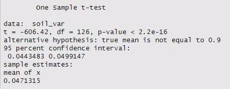

19 Question 1 - one sample t-test
For Questions 1 and 2 we will focus on body mass of the most abundant penguin species in the dataset: the Adélie penguin.
Research Question:
Do the Adélie penguins from the Palmer Island Archipelago have a body mass that is significantly different to the body mass of captive Adélie penguins in zoos (mean = 4.2 kg)?
(The mean weight of various species of captive penguins can be found on page 23 of this penguin husbandry manual - I strongly encourage you to check out the illustrations on pages 16-18 when you have time.)
Because we only have one sample that we want to compare to a fixed value, we need to do a one-sample t-test.
The following questions are designed to move you through the statistical test map, aka The Flow Chart™, introduced in the lecture this week.
Questions:
Looking at the research question and the data:
- What do you think the outcome variable is?
- What kind of variable is it (e.g. categorical, discrete, continuous)?
- What do you think the predictor variable is?
- What kind of variable is it (e.g. categorical, continuous)?
Looking at The Flow Chart™:
- How far could you navigate through The Flow Chart™ based on your answers above?
- Can you get all the way to a test? Why or why not?

19.1 Prepare the data
In week 2 you learned how to remove NAs with the na.omit() function.
pengdata_clean <- na.omit(pengdata)In week 3 you learned how to filter data by the value in a column when you filtered by tree species.
# Filter list by specific tree species
filtered_data_tree <- data_tree |>
filter(species %in% mytrees)You can combine both of these functions into a single tidyverse pipeline with another pipe. (That’s why the na.omit() doesn’t need an argument inside the brackets - the argument is coming from the previous function via the pipe).
Adapt the code above to filter for Adélie penguins only and remove NAs.
It may help to run the code below to easily see how the different species are spelled/formatted, since you have to match the word exactly.
unique(peng_data$species)
#> [1] "Adelie" "Gentoo" "Chinstrap"Tips!
If you are just trying to match one value, you should use the
==operator. (The operator%in%is for matching one of many values within a vector.)If you are matching character data, you must put the value in quotation marks.
19.2 Check assumptions
First we need to decide if our data meet the criteria Normality. This will determine whether we can go ahead with a basic t-test, or if we need to use an alternative approach, like transforming our data or using a different (non-parametric) test.
Last week, we gave you a set of methods - and helped you write a function containing all the necessary code - to check a dataset for Normality.
You used it to assess the Lancaster University campus tree size data for Normality.
Find that function in your script from last week (along with the function to calculate skew).
Copy and paste it into this week’s script.
Load the function and use it to analyse the penguin data for Normality.
Questions:
- Are the data for Adélie penguin body mass Normally distributed?
- How big is your sample?
- Putting all of this information together, can we proceed with a t-test?
The data are a very good match for a Normal distribution.
We have a pretty large data set here (check the number of rows in the filtered data), so in theory we could be a little more lenient about strict conformity to the Normal distribution than we can with a small sample. However, this leniency isn’t needed.
This means we can go ahead and proceed with the t-test.
19.3 Hypotheses
Next, we write down our null and alternative hypotheses.
\(\mathrm{H}_0\): The mean body mass of wild Adélie penguins in the Palmer Island Archipelago is not significantly different to the mean body mass of captive Adélie penguins in zoos.
\(\mathrm{H}_\mathrm{A}\): The mean body mass of wild Adélie penguins in the Palmer Island Archipelago is significantly different to the mean body mass of captive Adélie penguins in zoos.
Tip!
It is important that you are able to identify the null and alternative hypotheses when setting up a statistical test.
However, when you are writing up your results in a report, you do not need to explicitly state both of the hypotheses. (As you read more scientific papers, you’ll notice they almost never do that.)
Instead, simply state what your research question or your actual hypothesis if you have one - whether your hypothesis is the null or the alternative from the statistical test perspective doesn’t matter.
19.4 One-sample t-test
To compare one sample of data to a specified mean value, you will need to perform a one sample t-test.
This specified mean value is generally represented by the Greek letter \(\mu\) (pronounced “mu”).
R will automatically perform a one sample t-test if you give the function t.test() only one sample of data as an argument.
The value the t-test compares the sample to will depend on if you provide an argument for mu or not.
- You can specify a value (x) by setting it using
mu = x - If you do not provide a mu value, R will assume that
mu = 0.
Remember that our value for \(\mu\) in this case is 4.2 kg. (NOTE: Our data is in grams! You will need to convert them to the same units, and it’s easiest to convert the \(\mu\) value).
Modify the template code below for the penguin data and run it.
# one sample t-test
t.test(mydf$mycol, mu = 0.9)The output should look something like this (but not exactly, because I ran it on a different dataset):

The output confirms that we have run the correct t-test at the top. Then it provides:
- the name of our sample data
- the test statistic (t)
- the degrees of freedom (df)
- the p-value
- the alternative hypothesis
- the mean value of our sample
- the 95% CI of the sample mean
The notation e-16 means \(\times 10^{-16}\), so that’s a very small p-value!
To help you keep track of your output, you can paste it into your R script (and comment the lines with #).
That way you won’t have to keep scrolling up and down in your console to find the results again.
Question:
Based on your one sample t-test results:
- Is P < 0.05?
- Should you reject or accept the null hypothesis?
Write down a formal sentence describing the outcome of the test in your script, with all of the appropriate information.
Write the sentence as a comment in your script, using the # symbol. You can hit Enter to write on multiple lines, but you will need to add a new # for each line.
Each sentence should include:
- the overall result of the research question (i.e. are the means the same or different to the regional value)
- the estimated mean and SE
- the test statistic, t
- the degrees of freedom, df
- the p-value
The last three quantities are usually provided in parentheses at the end of the sentence, like this: (t = 1.45, df = 15, p = 0.34).
For example: “The dry density of grassland soil from Lancaster University campus (mean = 0.87 ± 0.056) was not significantly different to the regional mean of 0.9 g/cm^3 (t = 1.45, df = 15, p = 0.34).”
Although the sample mean is provided in the t-test output, you will need to calculate the SE yourself.
Tips for SE!
Remember that the formula for standard error (\(\mathrm{SE}\)) as a function of the standard deviation (\(\sigma\)) and sample size (\(n\)) is:
\[ \mathrm{SE} = \frac{\sigma}{\sqrt{n}}\]
The function for standard deviation is sd().
The best way to calculate sample size of column or vector is using the length() function.
You can add the standard error to the top of your examine_norm() function to save having to type it out repeatedly - you will have to reload the function for the changes to take effect. (We will need to calculate SE for the data used in each question.)